Magnetismo é o nome dado aos fenômenos correlacionados à atração e repulsão capaz de ser observada em determinados materiais. Deste há tempos muito remotos, o ser humano já conhece e se beneficia dos fenômenos magnéticos. Há alguns materiais que naturalmente possuem polaridades, isto é, regiões antagônicas que existe sempre em pares; por exemplo: uma pedra de magnetita sempre possuirá duas regiões, uma que comumente chamamos sul e outra que geralmente denominamos norte. Os minerais magnéticos estão sempre interagindo entre si por meio de uma força chamada força magnética. A força existente entre polos iguais é força repulsiva, enquanto que a força que há entre polos antagônicos é força atrativa.
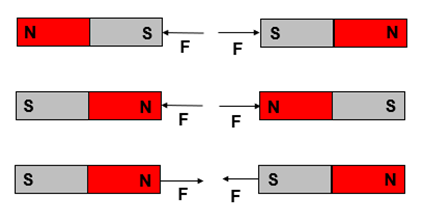
|
Textos escritos na antiguidade (de Platão e Aristóteles, por exemplo) dão conta de um instrumento, provavelmente de origem chinesa, capaz de guiar viajantes pelo mundo, este instrumento é, atualmente, chamado bússola, e consiste basicamente de um mineral de propriedades magnéticas posto em local propício a sua livre-deflexão. |
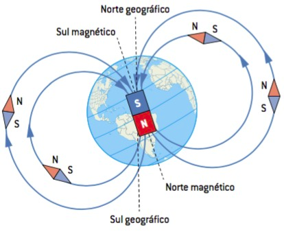 |
Assim como o magnetismo, a eletricidade também é objeto de curiosidade e investigação do homem há muitíssimo tempo. Existem registros que revelam que Tales de Mileto (considerado por muitos o primeiro filosofo natural – 600 AC) já conhecia e estudava o fenômeno da eletrização do âmbar e de outros objetos; Além disso, certamente desde os tempos mais primordiais da história do homem, O ser humano já travava contato, mesmo sem saber, com os fenômenos elétricos, seja quando em contato com algum mecanismo de defesa animal que alguns peixes possuem, seja quando vislumbrado pela fúlgida imagem de uma raio (em 1752, Benjamim Franklin, através do famigerado experimento da pipa, demonstrou que o raio é um fenômeno elétrico).
Em 1820, Hans Christian Oersted, fez passar corrente elétrica por um fio e notou que bússolas, quando próximas deste condutor, tinham o ponteiro deflexionado. A partir deste momento, soube-se que magnetismo e eletricidade estavam conectados, nascia ali o eletromagnetismo, a área da física que se ocupa do estudo do fênomeno elétrico e magnétio enquanto partes integrantes de um único fenômeno, o fenômeno eletromagnético.
➔ COMO ENTENDER O ELETROMAGNETISMO?
Para isso, é preciso conhecer a matéria do modo mais fundamental possível; com efeito, recorreremos ao estudo dos modelos atômicos.
Atomística é a área da ciência que estuda a matéria em escala fundamental, isto é, a matéria enquanto unidade.
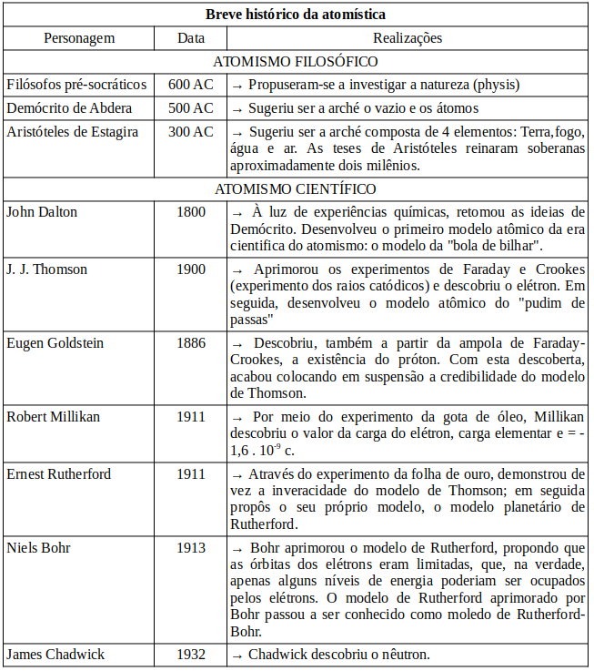
Os filosofos pré-socráticos ocupavam-se de investigar a natureza (physis). Destas investigações redundou o conceito de arché ou princípio, cujo conteúdo foi alvo de pretensas descrições por parte de grandes pensadores da antiguidade. A arche, na visão destes filósofos, seria a pedra angular de todas as coisas; a substância que funda tudo o que existe e que nisso prevalece enquanto existir. A Arché seria então o elemento que unificaria toda a realidade.
Diógenes de apolônio explica o raciocínio que levou os filósofos a ideia de arché:
"[..] Todas as coisas são diferenciações de uma mesma coisa e são a mesma coisa. E isto é evidente. Porque se as coisas que são agora neste mundo - terra, água, ar e fogo e as outras coisas que se manifestam neste mundo -, se alguma destas coisas fosse diferente de qualquer outra, ele seria diferente e diferenciava sua natureza própria e se não permanecesse, então não permaneceria puro, e através disso descobriu que ocorreu muitas mudanças e diferenciações, então as coisas não poderiam, de nenhuma maneira, misturar-se umas as outras, nem fazer bem ou mal umas as outras, nem a planta poderia brotar da terra, nem um animal ou qualquer outra coisa vir a existência, se todas as coisas não fossem compostas de modo a serem as mesmas. Todas as coisas nascem, através de diferenciações, de uma mesma coisa, ora em uma forma, ora em outra, retomando sempre a mesma coisa."
Muitos pensadores se debruçaram sobre o assunto e nos legaram valiosos escritos sobre a arché, mas foram dois os que prenunciaram aquilo que viria a ser conhecido como atomismo cientifico: Leucipo e Demócrito.
Leucipo e seu pupilo Demócrito propuseram que a natureza é composta por átomos e vazio. Os átomos seriam corpos indivisíveis, homogêneos, indestrutíveis e imutáveis, que existiriam em pluralidade de espécies. Os átomos se diferenciariam uns dos outros apenas pelo tamanho e pela forma, e as diferentes possibilidades de arranjo destes diferentes tipos de átomos explicaria a multiplicidade de coisas que existem no mundo; e o rearranho dos átomos explicaria a transformação das coisas.
A partir do final do século XVIII, o atomismo se liberta das especulações puramente metafísicas e paulatinamente passa ganhar estatus de teoria científica; é a partir deste momente que temos o aquilo que denomina-se atomismo cientifico.
À luz de experiências químicas, retomou às ideias de Demócrito, desenvolveu o primeiro modelo atômico da era cientifica do atomismo: o modelo da "bola de bilhar". Dalton desenvolveu 5 postulados para a sua tese:
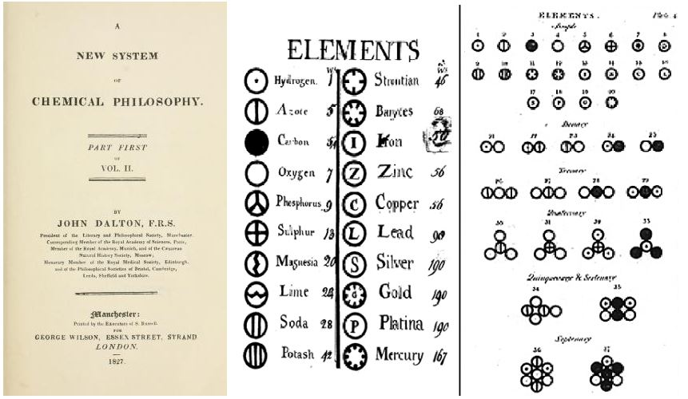
Os postulados de Dalton:
Toda matéria é formada por átomos esféricos, maciços, indivisíveis e indestrutíveis e homogêneos;
Cada elemento químico diferente apresentará um tipo de átomo;
Os átomos que compõem os mesmos elementos são iguais;
Átomos que constituem elementos diferentes possuem massas e tamanhos diferentes;
Nas reações ou transformações químicas não há destruição de átomos, e sim reconfiguração dos átomos existentes, formando novas substâncias.
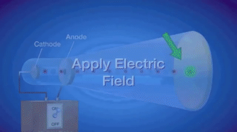
Faraday conectou a um tubo com gás em rarefação cabos eletrizados com cargas opostas, o cabo eletrizado (eletrodo) negativamente foi chamado catodo e o cabo eletrizado (eletrodo) positivamente ânodo. Seguiu-se que, a partir deste experimento, o cientista inglês percebeu que a presença destes cabos fazia gerar no interior do tubo uma certa luminosidade; percebeu também que esta luminosidade se deformava quando na presença de objetos eletricamente carregados. Mais tarde, o físico britânico William Crookes aperfeiçoou o aparato experimental de Faraday, tornando o gás no interior do tubo ainda mais rarefeito, e notou que a luminosidade dantes vista por Faraday, ganhava agora o aspecto de um filete de luz que vertia do cátodo em direção do ânodo; Crookes chamou esta luminosidade de raios catódicos. Ainda mais tarde, Thomson, trabalhando com o tubo de faraday-crookes, se beneficiou de inovações tecnológicas e fez novas manipulações experimentais na linha do que vinham fazendo Faraday e Crookes. Thomson descobriu que a luz observada era consequência da emissão de partículas que estavam presentes nos eletrodos e que, tais corpúsculos, não dependiam do material que compunha os eletrodos. O cientista concluiu, pois, que o átomo não fazia jus ao nome, pois a matéria, como se observou no experimento, era composto por unidades de matéria que detinham no seu interior partículas subatômicas, pedaços de matéria; esta partícula recém descoberta foi batizada com o nome elétron e a ela foi atribuída carga negativa, já que o fio de luz se deflexionava afastando-se de cargas negativas e aproximando-se de cargas positivas. Thomson, a partir de suas observações e intuição desenvolveu o modelo atômico que ficou conhecido como modelo pudim-de-passas de Thomson.
|
MODELO DE THOMSON: Neste modelo, os átomos são constituídos de um fluido permeável de carga positiva (o pudim). No interior deste fluido estariam os elétrons, que são partículas de carga negativa (as passas). Os elétrons, segundo Thomson, seriam atraídos pelo núcleo e vice-versa, devido a atração entre cargas de sinais opostos. |
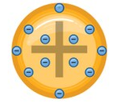 |
|
Sob a supervisão de Rutherford, Hans Geiger e Ernest Marsden realizaram o experimento que viria a ser conhecido como o experimento da folha de ouro, ou o experimento de Geiger-Marsden. Este experimento consistia em disparar contra uma fina película de ouro radiação alfa; e, com isso, e de acordo com o modelo de Thomson, esperava-se – em virtude da característica permeável do fluido positivo –, que toda ou a imensa maioria da radiação traspassasse a folha de ouro. No entanto, o que se observou foi que uma quantidade considerável da radiação era rebatida pela folha de ouro. Rutherford exprimiu sua surpresa na seguinte frase: “…o evento mais incrível que aconteceu comigo em toda a minha vida, foi quase tão incrível quanto se você atirasse um projétil de 15 polegadas num lenço de papel e ele ricocheteasse de volta e o atingisse” O experimento de Geiger-Marsden solapou o modelo de Thomson. Em seguida, Rutherford propôs um novo modelo, o modelo planetário de Rutherford. |
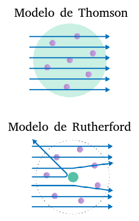 |
|
MODELO PLANETÁRIO DE RUTHERFORD: Neste modelo, a parte positiva do átomo concentrar-se-ia na região central (sol), ao passo que os elétrons orbitariam o núcleo (tal como os planetas orbitam o sol) numa espécie de nuvem eletricamente negativa. |
|
➔ O PROBLEMA DO MODELO DE RUTHERFORD: Há muito já se sabia que cargas aceleradas geram campos magnéticos. Portanto, como neste modelo o elétron executa um movimento circular, ele havia de ter aceleração centrípeta e tal aceleração deveria promover uma perda energética — Uma mitigação de sua eneriga potêncial elétrica — que faria o elétron necessariamente cair em espiral em direção ao núcleo. E tudo isto deveria acontecer, segundo os cálculos, dentro de 10-11 segundos. Tal coisa não se verifica na natureza. |
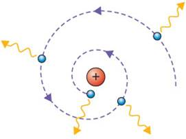 |
[Faça a simulação abaixo]
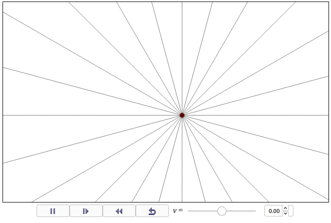
Niels Bohr, estudando o átomo de hidrogênio, solucionou o problema do modelo de Rutherford. A disposição das partículas no átomo do modelo de Bohr se assemelha muito a organização proposta por Rutherford; na verdade, podemos dizer que o modelo de Bohr é o modelo de Rutherford corrigido.
|
MODELO DE RUTHERFORD-BOHR: Neste modelo, Bohr modifica e corrige o modelo de Rutherford ao afirmar que os elétrons orbitavam os prótons do núcleo em orbitas quantizadas, carregando quantias específicas de energia, isto é, em órbitas de raios e quantidade de energia específicos. Neste modelo, os elétrons podem saltar de uma órbita a outra, ganhando ou perdendo energia neste processo, mas nunca poderão estar em uma região aquém ou além destas regiões específicas. |
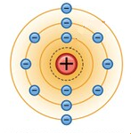 |
Teoricamente existem infinitas camadas sobre as quais podem os elétrons orbitar, mas, até o presente, observamos que todos os elementos químicos conhecidos ocupam no máximo 7 camadas (camadas K, L, M, N, O, P ou Q)
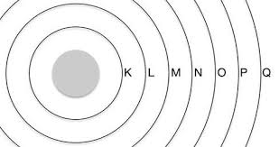
Atualmente, entendemos que os elétrons não apenas se distribuem ao redor do núcleo, conforme previu Niels Bohr, em regiões de raios e energia específicos, mas também, dentro destas regiões, em subregiões, chamadas de subníveis de energia e orbitais.